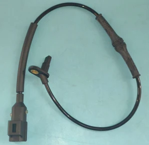

ABS Sensors
C2P15770
Our part no. WL18-Jk021 · brand WEILI
| OE number | C2P15770 |
|---|---|
| Cross-reference | |
| Brand | WEILI |
| Vehicle fitment | Rear wheel Jaguar F-TYPE (14 ) Jaguar XF (09-15 ) Jaguar XK (06-14 ) |
| Our part no. | WL18-Jk021 |
Vehicle application
Rear wheel Jaguar F-TYPE (14 ) Jaguar XF (09-15 ) Jaguar XK (06-14 )
More ABS Sensors
Buying this part
Guangzhou Yumengyang Auto Parts Co., Ltd. supplies ABS Sensor under our own brand WEILI. Send us the OE number on WhatsApp and we will confirm availability, price, MOQ and packing. Samples for testing are available on request.